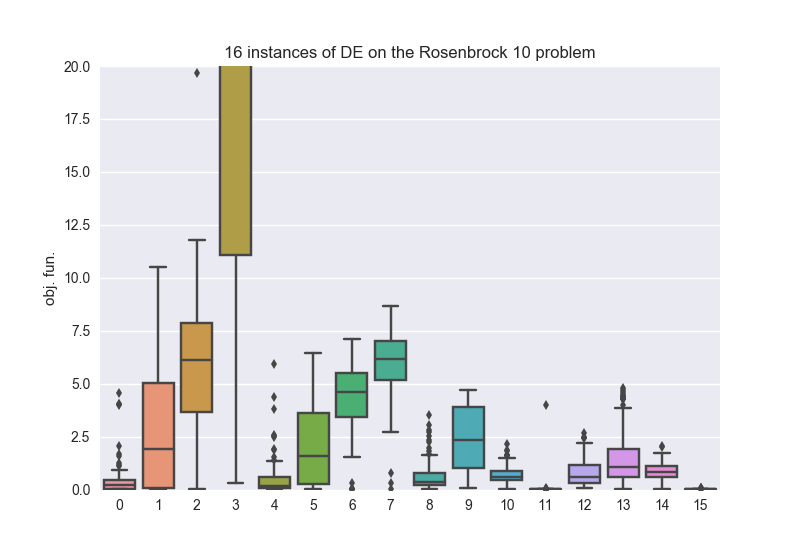

Use of the class island#
The island class is the unit parallelization block of pagmo. The idea is that, in pygmo, an island is a computational
unit that can be physically located anywhere and that can thus be used to outsource calls to evolve()
unloading the main computational unit from the task. As such it is able to run evolutions on a separate thread, process or remote machine,
according to the implementation details of the UDI (User Defined Island) whose type it erases. Similarly to how an algorithm
evolves a population according to the UDA, and a problem computes its fitness according to the UDP.
The non-advanced user does not have to implement his own UDI as we provide the most popular parallel task execution paradigms already coded in UDIs provided with pygmo, a list of which can be found at List of islands.
Note
A collection of pygmo.island form an archipelago, you can skip this tutorial and follow directly the tutorial “Use of the class archipelago”
in case you are happy with the default choices pygmo will do for you to parallelize your tasks via the archipelago.
We start by instantiating an island.
>>> import pygmo as pg
>>> isl = pg.island(algo = pg.de(10), prob = pg.ackley(5), size=20, udi=pg.thread_island())
Regardless of the udi kwarg, should the construction be successfull, a new thread will be opened and delegated
to run the evolve() method. Since, in this case, we constructed the island specifying an
udi, and in particular we chose the thread_island, the population evolution will happen directly
on the opened thread.
Note
Since an evolution (optimization task) requires both evaluations of the problem fitness function and
the execution of the algorithm logic, both these must be marked as thread safe in order for a
thread_island to be able to run an evolution.
>>> isl.evolve()
With this simple command, we run the evolution, and since the task is offloaded to a different thread our current python session or script is not affected so that we can run other things in the meantime.
Consider the following script, for example:
>>> islands = [pg.island(algo = pg.de(gen = 1000, F=effe, CR=cross), prob = pg.rosenbrock(10), size=20, seed=32) for effe in [0.3,0.5,0.7,0.9] for cross in [0.3,0.5,0.7,0.9]]
>>> _ = [isl.evolve() for isl in islands]
>>> _ = [isl.wait() for isl in islands]


In the above three lines of code we run, in parallel threads, the same optimization tasks using 16 Differential Evolution algorithm (de) with different values for
its crossover and F parameter. Thanks to the seed being specified in the island constructor the same population will be fed to the different algorithmic instances.
Note
Since no udi argument is specified, the island constructor will choose the island type for us using its own internal heuristics (see the documentation). In this
case since both the problem and the algorithm are thread safe, a thread_island will be chosen (as can be verified calling the __repr__() method).
Warning
This use of the island is, essentially, replicating some of the functionalities of the archipelago. While interesting to get acquainted with pygmo
machinery, and thus great in the context of this tutorial, we discourage this type of scripting and encourage the use of an archipelago (with no migration) instead.
Repeating the same computation a hundreds times we can obtain the boxplot on the right, where the best parameters for the algorithm and this task are found. id0: F = 0.3, CR = 0.3, id11: F = 0.7, CR = 0.9, id15: F = 0.9, CR = 0.9. The script that generates the plot on the right is reported for convenience.
>>> res = []
>>> for i in range(100):
... islands = [pg.island(algo = pg.de(gen = 1000, F=effe, CR=cross), prob = pg.rosenbrock(10), size=20, seed=32) for effe in [0.3,0.5,0.7,0.9] for cross in [0.3,0.5,0.7,0.9]]
... _ = [isl.evolve() for isl in islands]
... _ = [isl.wait() for isl in islands]
... res.append([isl.get_population().champion_f[0] for isl in islands])
>>> import seaborn as sns
>>> import pandas as pd
>>> import matplotlib.pyplot as plt
>>> sns.boxplot(pd.DataFrame(res))
>>> ylim = plt.ylim([0,20])
>>> plt.title("16 instances of DE on the Rosenbrock 10 problem")
>>> plt.ylabel("obj. fun.")
Managing exceptions#
What happens if, during the optimization task sent to an island, an exception happens? The island has the
possibility to rethrow the first encountered exception, in the main thread, via a call to its method wait_check().
Assume, for example that your problem or algorithm is somehow throwing (I know, what are the chances right?). To illustrate this case, we are going to use the
following UDP:
>>> class raise_exception:
... def __init__(self):
... self.counter=0;
... def fitness(self,dv):
... if self.counter == 300:
... raise ValueError("Ops!")
... self.counter += 1
... return [self.counter]
... def get_bounds(self):
... return ([0],[1])
... def get_name(self):
... return "A throwing UDP"
We construct an island:
>>> isl = pg.island(algo = pg.de(100), prob = raise_exception(), size=20, udi=pg.ipyparallel_island())
Note
We have explicitly passed the udi argument to the island constructor and selected an ipyparallel island.
This requires that a cluster is started typing, for example, the command ipcluster start.
This construction will trigger \(20\) function evaluations and thus will not throw. Let us now run an evolution:
>>> isl.evolve()
>>> isl.wait()
Everything looks fine: in our thread nothing really happened nor threw. But if we, for example inspect the island we get:
>>> print(isl)
Island name: Ipyparallel island
Status: idle - **error occurred**
Extra info:
Queue status:
(unassigned, 0)
(0, {'queue': 0, 'completed': ..., 'tasks': 0})
(1, {'queue': 0, 'completed': ..., 'tasks': 0})
(2, {'queue': 0, 'completed': ..., 'tasks': 0})
(3, {'queue': 0, 'completed': ..., 'tasks': 0})
(4, {'queue': 0, 'completed': ..., 'tasks': 0})
(5, {'queue': 0, 'completed': ..., 'tasks': 0})
(6, {'queue': 0, 'completed': ..., 'tasks': 0})
(7, {'queue': 0, 'completed': ..., 'tasks': 0})
Algorithm: Differential Evolution
Problem: A throwing UDP
Population size: 20
Champion decision vector: ...
Champion fitness: ...
What has happened? I need to retrieve that message!
>>> isl.wait_check()
Traceback (most recent call last):
File "/Users/darioizzo/miniconda3/envs/pagmo/lib/python3.6/doctest.py", line 1330, in __run
compileflags, 1), test.globs)
File "<doctest default[0]>", line 1, in <module>
isl.wait_check()
RuntimeError: The asynchronous evolution of a pythonic island of type 'Ipyparallel island' raised an error:
Traceback (most recent call last):
File "/Users/darioizzo/.local/lib/python3.6/site-packages/pygmo/_py_islands.py", line 403, in run_evolve
return ret.get()
File "/Users/darioizzo/miniconda3/envs/pagmo/lib/python3.6/site-packages/ipyparallel/client/asyncresult.py", line 167, in get
raise self.exception()
File "/Users/darioizzo/miniconda3/envs/pagmo/lib/python3.6/site-packages/ipyparallel/client/asyncresult.py", line 224, in _resolve_result
raise r
ipyparallel.error.RemoteError: ValueError(Ops!)